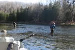
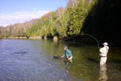

Indoor Fly Casting
The fly casting program for this season will begin on Wednesday February 27th and will continue ..
The majority of rivers in southern and south central Ontario flow from the height of the Niagra Escarpment and out of the glacial deposits of the Dundalk Till Plain. This vast region of elevated moraine holds the massive water stores necessary to sustain the flow for so many rivers and streams and provides the cold water necessary to maintain healthy populations of trout. The water quality is excellent and hosts most of the major insects found in the east with many of the rivers regularly yielding unrivaled hatches of mayflies, caddis and stoneflies with an abundance of terrestrial insects found along the riverbanks. We have a hatch chart with suggested fly patterns for Ontario anglers.
The Saugeen River and The Grand headline the list of large systems in the region and make up about 65% of our field of guiding. With approximately 15 different beats on these two rivers alone, plus the famed tail water section of the upper Grand, our clients are never bored working the same water. However, weather systems can occasionally throw a hitch in our plans. Our Ontario fishing guides are fully qualified to utilize other available resources in the region that are less volatile or unaffected by weather events requiring a change in plans.
The largest of the Great Lakes tributaries flowing through southern Ontario, the Grand has both cold and warm water sections. The cold waters are home to world-class trout and steelhead, while bass inhabit the warmer waters. Grand River Information
This diverse river is one of Canada’s best and should be on every serious angler’s Must Fish list. Magnificent natural beauty, one of the greatest steelhead runs in the Canadian Great Lakes, and trophy smallmouth bass are just a few of the reasons our clients love working the Saugeen. Saugeen River Information
There are few contingencies that Grindstone guides are not prepared for. Whether you want to work a particular body of water, prefer fishing small streams, or have a time restriction that keeps you from traveling far from the Toronto airport, we can put you on a productive river that will meet your requirements during your stay in Ontario.
Contact us today to inquire about a guided trip on any of the great rivers in Ontario. You can call the shop at 905-689-0880 or using our guide trip inquiry form below. You can find out more about our services on our Ontario Fishing Guide Service page.

The fly casting program for this season will begin on Wednesday February 27th and will continue ..
Fall is moving in quick and along with the cooler weather Steelhead, Salmon and Browns are movin..